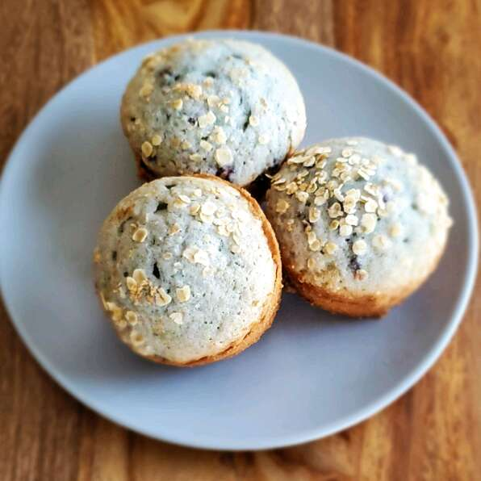

Best of the Blueberry Muffins

Description
Big blueberry muffins with a crusty sugar topping. This is a recipe I got from my Grandma. The blueberries and the sweet batter are fabulous together. The muffins are loved by all who try them. Quick and easy. Made with few ingredients. Remember to use paper liners!
Ingredients
- 1/2 Cup Unsalted Butter
- 1 1/4 Cups White Sugar
- 1/2 Teaspoon Salt
- 2 Eggs
- 2 Cups All-Purpose Flour, Divided
- 2 Teaspoons Baking Powder
- 1/2 Cup Buttermilk
- 1 Pint Fresh Blueberries
- 2 Tablespoons White Sugar
Steps
- Position rack in middle of oven. Preheat oven to 375 degrees F (190 degrees C). Spray the top of a muffin pan with non-stick coating, and line with paper liners.
- In a large bowl, cream together the butter, 1 1/4 cups sugar, and salt until light and fluffy.
- Beat in the eggs one at a time. Mix together 1 3/4 cup of the flour and the baking powder.
- Beat in the flour mixture alternating with the buttermilk, mixing just until incorporated. Crush 1/4 of the blueberries, and stir into the batter.
- Mix the rest of the whole blueberries with the remaining 1/4 cup of the flour, and fold into the batter.
- Scoop the batter into the muffin cups. Sprinkle tops lightly with sugar.